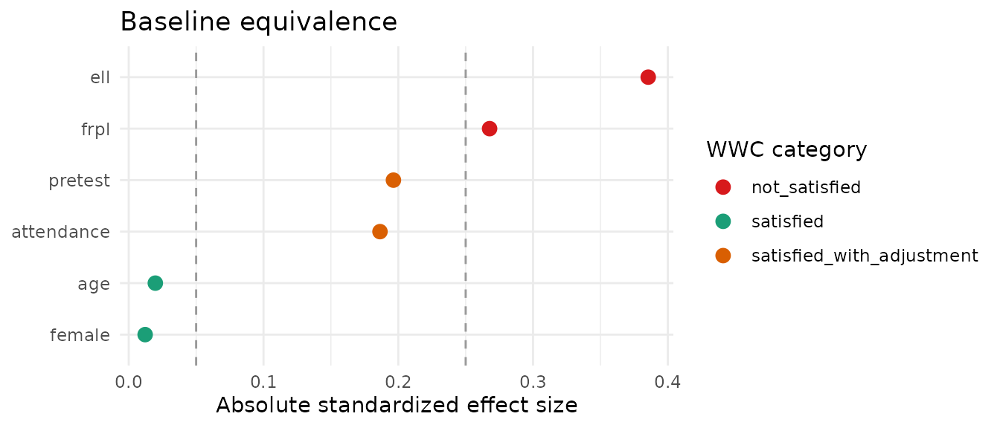

An impact-evaluation workflow
Source:vignettes/impact-evaluation-workflow.Rmd
impact-evaluation-workflow.RmdThis vignette walks from a study’s raw data to a baseline-equivalence
report, using the bundled (simulated) tutoring dataset.
library(baselinr)
data(tutoring)
head(tutoring)
#> treat pretest attendance age female frpl ell posttest
#> 1 1 33.02273 0.9416614 10.2 1 0 1 49.8
#> 2 1 47.86310 0.9759478 10.0 1 0 1 53.0
#> 3 1 42.15184 1.0000000 10.3 0 0 0 49.2
#> 4 1 45.37557 0.9483293 10.7 1 0 0 57.4
#> 5 1 38.89146 0.9512494 9.4 0 1 0 49.3
#> 6 1 47.94922 0.9757792 9.4 0 0 1 43.8tutoring is a simulated
quasi-experimental evaluation: 200 students who received a tutoring
program (treat = 1) and 200 who did not
(treat = 0), with baseline covariates and a post-program
posttest.
Step 1: assess baseline equivalence — before looking at the outcome
The credibility of any later effect estimate rests on whether the two
groups were comparable at baseline. We pass the
baseline covariates explicitly — crucially
not posttest, which is an outcome, not a
baseline covariate.
baseline_covs <- c("pretest", "attendance", "age", "female", "frpl", "ell")
equiv <- baseline_equivalence(tutoring, treatment = "treat",
covariates = baseline_covs)
knitr::kable(equiv, digits = 3)| covariate | type | n_treatment | n_comparison | mean_treatment | mean_comparison | sd_treatment | sd_comparison | effect_size | wwc_category |
|---|---|---|---|---|---|---|---|---|---|
| pretest | continuous | 200 | 200 | 52.150 | 50.099 | 9.824 | 10.993 | 0.196 | satisfied_with_adjustment |
| attendance | continuous | 200 | 200 | 0.927 | 0.918 | 0.053 | 0.049 | 0.186 | satisfied_with_adjustment |
| age | continuous | 200 | 200 | 10.044 | 10.034 | 0.508 | 0.504 | 0.020 | satisfied |
| female | binary | 200 | 200 | 0.530 | 0.525 | 0.500 | 0.501 | 0.012 | satisfied |
| frpl | binary | 200 | 200 | 0.555 | 0.445 | 0.498 | 0.498 | 0.268 | not_satisfied |
| ell | binary | 200 | 200 | 0.250 | 0.150 | 0.434 | 0.358 | 0.385 | not_satisfied |
baselinr automatically uses Hedges’ g for the continuous
covariates (pretest, attendance,
age) and the Cox index for the binary ones
(female, frpl, ell).
Step 2: read the categories
Each covariate falls into one of three What Works Clearinghouse categories:
equiv[, c("covariate", "effect_size", "wwc_category")]
#> covariate effect_size wwc_category
#> 1 pretest 0.19639834 satisfied_with_adjustment
#> 2 attendance 0.18641935 satisfied_with_adjustment
#> 3 age 0.01971405 satisfied
#> 4 female 0.01215809 satisfied
#> 5 frpl 0.26775010 not_satisfied
#> 6 ell 0.38544774 not_satisfied-
satisfied— the groups are equivalent on this covariate; nothing more to do. -
satisfied_with_adjustment— equivalence holds only if you statistically adjust for this covariate in the impact model. This is a commitment, not a pass: those covariates must appear in the model. -
not_satisfied— this covariate cannot establish equivalence even with adjustment. It’s a threat to the study’s credibility that you have to confront, not bury.
Step 3: visualise
love_plot(equiv)
The dashed lines mark the 0.05 and 0.25 thresholds; points are coloured by category. The plot makes the at-risk covariates obvious at a glance.
Step 4: a report-ready table
For a written report or a Quarto/HTML document,
gt_baseline() returns a formatted gt
table:
gt_baseline(equiv)What this does and doesn’t tell you
baselinr reports the baseline equivalence picture. It
does not fit the impact model for you. The next steps
are yours: include the satisfied_with_adjustment covariates
in the model, and decide how to handle (or report the limitation of) any
not_satisfied covariate before you interpret the program’s
effect on posttest.